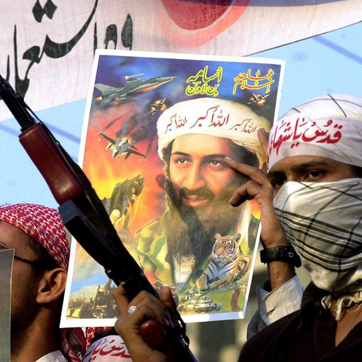

Harris's[5] work on organisational evil emphasises that mass harm rarely emerges from individual pathology alone, it requires institutional architecture. Al-Qaeda's particular achievement was its ability to industrialise a psychopathic vision through recognisable managerial forms. It had committees. It had budgets. It had an HR function — a recruitment and vetting process so sophisticated that the 9/11 Commission described its command structure in terms more familiar to corporate governance scholarship than counterterrorism.[6] It had a media department (As-Sahab) producing propaganda with production quality that rivalled professional broadcasting.
Harris would recognise the cognitive machinery at work: the renaming of victims (not civilians, but "Crusaders"), the sacralisation of violence (not murder, but martyrdom), the bureaucratisation of harm (not killing, but "operations"). Participants could compartmentalise their role, the pilot was not killing thousands; he was executing a mission assigned by a committee, blessed by a scholar, and sanctioned by God. This is exactly what Harris means by ordinary evil: not sadism, but role-distance, dehumanisation, and the diffusion of responsibility across an institutional structure that makes the unthinkable thinkable.
Bakan's[1] framing of the corporation as a legal person incapable of genuine moral conscience is mirrored in Al-Qaeda's theological insulation. Just as corporate law allows executives to claim they acted "in shareholders' interests," Al-Qaeda's religious framing allowed every participant to claim they acted in God's interest. The organisation was constitutionally incapable of remorse, because its mandate was defined as righteous. This is not a metaphor. It is the structural logic by which Bakan's externalising machine was replicated in a non-corporate form.
"The corporation is an externalising machine, in the same way that a shark is a killing machine, each driven by its own internal logic to do harm to others in order to satisfy its own needs."
— BAKAN, J. (2004). The Corporation. Free Press. p.70. Applied here to Al-Qaeda's organisational architecture.
The organisational chart below overlays Padilla et al.'s Toxic Triangle on Al-Qaeda's known command hierarchy. Each tier is annotated for its moral-accountability function, demonstrating how structure, not only ideology, produced mass harm.
Amir-General / Destructive Leader
(Activists)
(Participants)
(Diehards)
(Bakan's cost externalisation, literal)
Bakan's externalising machine, the corporation that projects its costs onto the world while internalising its benefits, finds its most literal expression in Al-Qaeda. The costs of Al-Qaeda's operations were externalised onto civilians in New York, Nairobi, Bali, and Madrid. The benefits (ideological legitimacy, follower recruitment, donor funding, strategic territorial gains) were internalised by the organisation and its leadership.
The mechanism of externalisation in Al-Qaeda also incorporated theological architecture. Bakan notes that corporate executives are protected from moral accountability by the legal fiction of shareholder duty, they harm others by design of the system they operate within. In Al-Qaeda, the equivalent protection was divine mandate. The soldier who followed orders was absolved; the scholar who issued the fatwa was performing scholarship; the leader who directed the operation was fulfilling prophecy. No one, within the system's own logic, was responsible for the harm.
This is what Harris means by the banality of bad leadership: it is not that the participants were unaware of what they were doing. It is that the organisation's architecture had made moral awareness structurally irrelevant to their continued participation.
| Mechanism | Corporate manifestation (Bakan) | Al-Qaeda manifestation |
|---|---|---|
| Cost externalisation | Environmental damage, labour exploitation projected onto third parties | Civilian death projected onto "enemy" populations with no recourse |
| Moral insulation | "Shareholder duty" removes personal moral accountability | "Divine mandate" removes personal moral accountability |
| Role diffusion | Executive sets strategy; managers operationalise; workers execute | Amir sets strategy; committees operationalise; cells execute |
| Institutional remorse | None by design, corporation cannot feel guilt | None by design, sacred mandate precludes remorse |
| Brand/identity management | PR, marketing, mission statements | As-Sahab media unit, bin Laden's staged addresses, propaganda distribution |
Al-Qaeda's media output should itself be understood as a Bakan-style corporate communication: brand-building, stakeholder management, and mission articulation produced by a dedicated media committee (As-Sahab) for a global audience of potential followers and adversaries.